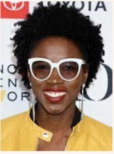
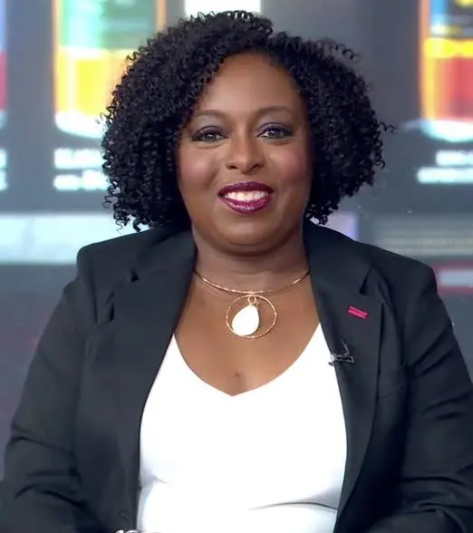

Monisha’s Tech Hero

Joy Buolamwini is my tech hero. She is the creator of the Algorithmic Justice League. Her work focuses on promoting fairer technologies and uncovering biases in artificial intelligence. She discovered that her face was not recognized by facial identification software while working on a project at MIT, unless she put on a white mask. She was inspired by this, to look into how these systems performed for individuals with varying skin tones. Her research showed how a person's gender and skin tone might affect how well technology works.
Watch Buolamwini's video on MIT Media Lab Visit Algorithmic Justice League
Ray’s Tech Hero

Kimberly Bryant is an engineer and the founder of Black Girls Code, a nonprofit organization created to expand access to technology education for black girls and other underrepresented youth. Bryant noticed that the lack of diversity in technology was not simply about interest or ability: access, representation, mentorship, and a sense of belonging shaped who feels that they have a place in the tech industry. Instead of only pointing out the problem, Bryant helped create a space where young people could learn coding, computer science, and other technical skills while looking up to creators and leaders with a diverse background.
Vedika’s Tech Hero
Ridhi Tariyal is an engineer, scientist, businesswoman, and writer. She co-founded NextGen Jane as an effort advance women’s health through biotechnology. Her work consists of non-invasive diagnostics for women’s reproductive health conditions, especially endometriosis. NextGen Jane developed a platform (around smart tampon technology) to capture shedding uterine lining tissue, which, according to research, is a powerful diagnostic asset. Her team aims to enable early detection and targeted treatments for reproductive diseases by genomic profiling, RNA sequencing, and molecular biomarker identification.